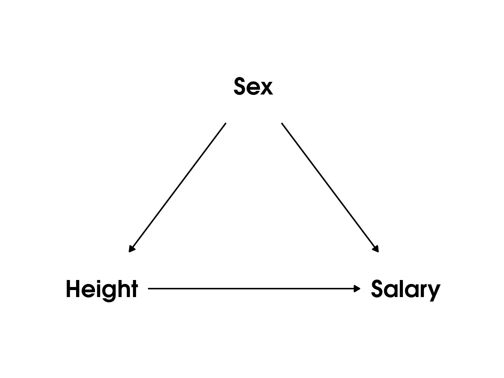
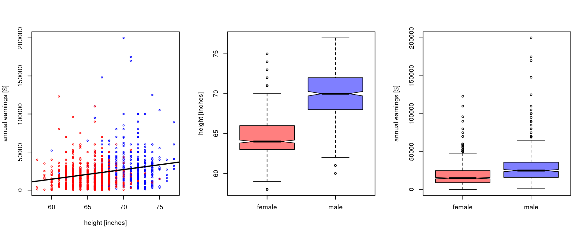

Code
earnings <- read.csv("earnings.csv")PS3192 25-26
This dataset contains the annual earnings (in $), the heights (in inches) and the sex (male/female) of a random sample (N=1192) of adult Americans, surveyed in the 1990.
Download the file earnings.csv from the Moodle page, copy it in your working directory, and run the following code:
earnings <- read.csv("earnings.csv")Alternatively, you can directly import the data from a URL
earnings <- read.csv("https://mlisi.xyz/PS3192/datasets/earnings.csv")The command str() comes handy to examine the nature of objects in the working space
str(earnings)'data.frame': 1192 obs. of 3 variables:
$ female: int 0 1 1 1 1 1 1 0 0 0 ...
$ earn : num 50000 60000 30000 50000 51000 9000 29000 32000 2000 27000 ...
$ height: int 74 66 64 63 63 64 62 73 72 72 ...Suppose we want to sue this data to address a question of whether people’s height causally influence their salary.
A first approach could be to fit the linear regression model:
m <- lm(earn ~ height, data = earnings)
summary(m)
Call:
lm(formula = earn ~ height, data = earnings)
Residuals:
Min 1Q Median 3Q Max
-30166 -11309 -3428 6527 172953
Coefficients:
Estimate Std. Error t value Pr(>|t|)
(Intercept) -61316.3 9525.2 -6.437 1.76e-10 ***
height 1262.3 142.1 8.883 < 2e-16 ***
---
Signif. codes: 0 '***' 0.001 '**' 0.01 '*' 0.05 '.' 0.1 ' ' 1
Residual standard error: 18870 on 1190 degrees of freedom
Multiple R-squared: 0.06218, Adjusted R-squared: 0.06139
F-statistic: 78.9 on 1 and 1190 DF, p-value: < 2.2e-16Which reveals a significant effect of 1262 extra dollars per year for each additional in of height.
At this point the statistician gets suspicious — is this a real effect?
One possible explanation is that this is confounded by sex. Simply put, it is known that there are gender disparities in salary (and these were likely even larger in 1990), and that men tend to be taller (on average) than women. So this may be just a spurious correlation. This is a common ‘confounding by lurkign third variable’ situation, which is summarised by the following causal graph1

Indeed if we visualise the data we can see that the sex seems to be a major confounding factor:
# prepare plotting window
par(mfrow=c(1,3))
# scatterplot. first we plot males as blue dots
plot(earnings$height[earnings$female==0],
earnings$earn[earnings$female==0],
col="blue",cex=0.5,
ylab="annual earnings [$]",
xlab="height [inches]",
xlim=range(earnings$height))
# add females as red dots
points(earnings$height[earnings$female==1],
earnings$earn[earnings$female==1],
col="red",cex=0.5)
# add regression line
abline(lm(earn~height, earnings),lwd=2)
# for X label in boxplot
earnings$sex <- ifelse(earnings$female==1,"female","male")
# boxplots
boxplot(height ~ sex, earnings, notch=T, xlab="", ylab="height [inches]",col=c(rgb(1,0,0,0.5),rgb(0,0,1,0.5)))
boxplot(earn ~ sex, earnings, notch=T, xlab="", ylab="annual earnings [$]",col=c(rgb(1,0,0,0.5),rgb(0,0,1,0.5)))
One way to check this is to adjust our estimate of he effect of height by including sex in our model
m2 <- lm(earn ~ height + female, data = earnings)
summary(m2)
Call:
lm(formula = earn ~ height + female, data = earnings)
Residuals:
Min 1Q Median 3Q Max
-30087 -11013 -3315 6128 170242
Coefficients:
Estimate Std. Error t value Pr(>|t|)
(Intercept) -1246.8 13800.5 -0.090 0.9280
height 442.9 196.6 2.253 0.0245 *
female -9087.9 1529.9 -5.940 3.74e-09 ***
---
Signif. codes: 0 '***' 0.001 '**' 0.01 '*' 0.05 '.' 0.1 ' ' 1
Residual standard error: 18600 on 1189 degrees of freedom
Multiple R-squared: 0.08921, Adjusted R-squared: 0.08768
F-statistic: 58.23 on 2 and 1189 DF, p-value: < 2.2e-16(Note that here female is a so-called “dummy” variable, that is a variable use to encode a categorical label by means of 0 and 1 values. Specifically, we have that female=1 when the datapoint correspond to a female respondent, and female=0 otherwise.)
Our new model still reveal some effect of height, but this is substantially smaller, and a very large effect of sex, where women earn about 9 thousands dollar less than men per year on average.
In linear regression we model a variable (outcome) as a function of one or more predictor variable
\[y_i = \beta_0 + \beta_1 x_i + \epsilon_i\] where \(y\) is the outcome (sometime referred to as “dependent” variable), \(x\) is the predictor, and \(\beta_0\) and \(\beta_1\) the intercept and slope coefficients, respectively. \(\beta_0\) tells us the expected value of \(y\) when \(x=0\) and \(\beta_1\) the expected increase in \(y\) for a unitary increase (+1) in \(x\). \(\epsilon\) indicates the residual or error terms, corresponding to the variability in the data that is not explained by our model. The key assumptions in linear regression (and all linear models, including ANOVA, t-test, etc.) are that these errors are normally distributed and they they are i.i.d. (independent and identically distributed).
You can sometime see the model also notates as
\[\hat y_i = \beta_0 + \beta_1 x_i\] Note that here we have removed the error term, and the dependent variable has a little “hat” symbol \(\hat \,\). This is standard notation to indicate that to the left of the equal sign we are now indicating the expected or predicted values of the regressions. The differences between the predicted/expected values and the actual data are the residuals, that is we can write \(\epsilon_i = y_i - \hat y_i\).
Formally, the central assumption of linear regression can be formally expressed as \(\epsilon \sim \mathcal{N}(0, \sigma_{\epsilon})\), which reads as “the residuals of regression have a normal distribution with mean 0 and standard deviation of \(\sigma_{\epsilon}\)”.
We can add more than one predictors , e.g. \[y_i = \beta_0 + \beta_1 x_i + \beta_2 z_i + \epsilon_i\] For example, our model m2 above. which has 2 predictors, could be written formally as
\[\text{earnings}_i = \beta_0 + \beta_1 \, \text{height}_i + \beta_2 \, \text{female}_i + \epsilon_i\] Essentially, the dependent variable is modeled as a weighted sum of the two predictors, plus a constant term (the intercept \(\beta_0\)).
As an exercise, try to apply the regression formula above using the values of coefficients from the fitted model to compute the predicted/expected salary of:
height=70 inchesheight=80 inchesYou can extract the precise values using the function coef()
coef(m2)(Intercept) height female
-1246.8469 442.9273 -9087.8668 A data scientist might work for a company that wants to use this data to offer personal styling packages priced relative to clients’ income. That is, we are not interested in why salary differs, we just want a model that makes good predictions.
The data scientist consider that perhaps we can make the model even more accurate by adding an interaction term:
m3 <- lm(earn ~ height * female, data = earnings)But how do we know which model will performs better in new data?
One standard approach in machine learning is to split the dataset in train and test data. Let’s say we want to keep aside 30% of the data as our training set.
# number of observations in the dataset
n <- nrow(earnings)
# row-indices of 30% randomly selected datapoints
test_idx <- sample(n, size = round(0.3 * n))
# split in test and training data
test_data <- earnings[test_idx, ]
train_data <- earnings[-test_idx, ]Now let’s fit again our models m2 adn m3 but using only the training data
m2_train <- lm(earn ~ height + female, data = train_data)
m3_train <- lm(earn ~ height * female, data = train_data)Now let’s evaluate their predictive performance on the training data. We will use the mean squared error (MSE) as an error metric:
\[\text{MSE} = \frac{\sum_{i=1}^n (y_i - \hat y_i)^2}{n}\]
# for model m2
pred_m2 <- predict(m2_train, newdata = test_data)
MSE_m2 <- mean((test_data$earn - pred_m2)^2)
# for model m3
pred_m3 <- predict(m3_train, newdata = test_data)
MSE_m3 <- mean((test_data$earn - pred_m3)^2)Results:
cat(sprintf(" MSE model m2: %.2f\n MSE model m3: %.2f", MSE_m2, MSE_m3)) MSE model m2: 323382404.16
MSE model m3: 322356453.46One concern, however, is that the results observed might be specific to this particular split of observations in train and test data. In other words, would we find the same results if a different subset of observations went in training and test sets?
A standard approach to deal with this is repeating the analysis with different splits of training and test sets, and then average the results. In order to do this, is helpful to get familiar with control flow statements, a fundamental but powerful type of programming structure. This allows to automatise complex tasks involving multiple steps and branching logic. When coding complex projects, it is also often helpful to build our own custom functions, especially when the same set of operations may be needed in multiple places within a project. The two boxes below illustrate these conceps, and you can find a more systematic introduction in the Chapter 1 of the textbook2
for & if statements
Some of the most powerful tools in computer coding are for loops and if statements. These allow us to repeat the same operations over different values, or ask a question about some variables and run code only if certain conditions are met.
We will start with for loops. The basic structure is illustrated by the example below:
for (i in c(5, 2, 7)) {
print( 3*i -2 )
}[1] 13
[1] 4
[1] 19What is going on here? The for (i in c(5, 2, 7)) part of the loop creates a new variable called i and initially sets it to 5. It runs the code in between the parenthesis {} using this value of i. It then sets i to the next value (2) and repeats. Finally, it runs the code one more with i=7. This can be very powerful! In our simple example here, the for loop doesn’t save much time over writing out the print() statement three times (one for 5, 2 and 7), but imagine if we wanted to run for(i in 1:1000)! Similarly, the code in between the {} is quite short in this example, but in practise we often use more complex series of operations.
On the other hand, if statement allows us to run a block of code if some condition is true.
n <- 7
if (n > 5)
{
print("x is greater than 5!")
} [1] "x is greater than 5!"We can combine these with an else statement that tells R what to do if the conditions of the if statement are not true. For example:
[1] "x is greater than 5!"We can extend R by writing our own functions. Here is an example of a function that ‘center’ a variable; that is it subtract its mean, so that as a result the centered variable values will have a mean of zero. (This is often useful when interpreting a multiple regression model with interactions.)
Here is one way to write such a function:
center <- function(x) {
# subtract the mean from each value
x_centered <- x - mean(x)
return(x_centered)
}Notice the general form for defining a function in R. The name for our new function comes first, followed by <- function( ). Between the ( ) we list the values we want to pass to the function. Finally, we have a pair of { } parenthesis which contain all of the code we wish to run when the function is called. The only new concept here is the return() function that passes the answer of our function back out to our R environment.
Once we have executed the code above, the function is now available in R workspace (if you run the command ls() you should see a list of all objects in the workspace, and that should include something called "center").
We can now use our function:
# create a variable
v <- c(4,2,3,5,6,7,8,9,2,3,4,5)
# check it's mean
mean(v)[1] 4.833333# use our function to center
v_centered <- center(v)
# the mean should now be zero (or approximately zero)
mean(v_centered)[1] 2.960403e-16(Note that the mean of the centered varial is not exacly zero, but something like 2.960403e-16. This is scientific notation for \(2.9\times 10^{-16}\) which is a very small number. It is not exactly zero because computers use something something called “floating-point arithmetic” to represent and perform calculations on real numbers, which introduces small rounding errors because most decimal fractions can’t be perfectly represented).
Having covered this background, we can performa what machine learning folks call a 10-fold crossvalidation procedure:
First, it can be useful to write a custom function that compute the MSE given model and a formula syntax (note that you can pass the model formula to lm() as a character string).
# function to compute test-set MSE -----------------------------
compute_MSE <- function(formula, train_data, test_data) {
# fit the model on the training data
model <- lm(formula, data = train_data)
# predict outcomes for the test data
pred <- predict(model, newdata = test_data)
# compute mean squared error
MSE <- mean((test_data$earn - pred)^2)
return(MSE)
}We can check that using this in the split we have used above return the same values:
compute_MSE(earn ~ height + female, train_data, test_data)[1] 323382404compute_MSE(earn ~ height * female, train_data, test_data)[1] 322356453Finally, we can use this function in a for loop, and compute the predictive performance of our two models:
# 10-fold cross-validation ------------------------------------
set.seed(123) # for reproducibility
n <- nrow(earnings)
K <- 10
# assign each observation to one of K folds
fold_id <- rep(1:K, length.out = n)
fold_id <- sample(fold_id)
# storage for test MSEs
MSE_m2 <- numeric(K)
MSE_m3 <- numeric(K)
for (k in 1:K) {
# split data into training and test sets
test_idx <- which(fold_id == k)
train_idx <- which(fold_id != k)
train_data <- earnings[train_idx, ]
test_data <- earnings[test_idx, ]
# compute test MSE using our custom function
MSE_m2[k] <- compute_MSE(earn ~ height + female,
train_data, test_data)
MSE_m3[k] <- compute_MSE(earn ~ height * female,
train_data, test_data)
}
# average performance across folds
mean_MSE_m2 <- mean(MSE_m2)
mean_MSE_m3 <- mean(MSE_m3)
cat(sprintf("Average test MSE over %d folds:\n", K))Average test MSE over 10 folds:cat(sprintf(" model m2 (height + female): %.2f\n", mean_MSE_m2)) model m2 (height + female): 347139026.30cat(sprintf(" model m3 (height * female): %.2f\n", mean_MSE_m3)) model m3 (height * female): 346816457.78In this activity you will work with a real-world housing dataset and focus explicitly on prediction rather than explanation.
Your goal is to build a model that predicts the median house value (medv) as accurately as possible for new, unseen data.
Instructions
In the next workshop, a test set with the true values will be released, and we will compare predictive performance across models.
The code below illustrates a very simple baseline model using only a few predictors. This is not expected to be optimal.
# Load the training data
train <- read.csv("california_housing_train.csv")
# Inspect the variables
str(train)'data.frame': 100 obs. of 15 variables:
$ lon : num -71.1 -71.1 -71 -71.1 -71.1 ...
$ lat : num 42.2 42.2 42.2 42.2 42.2 ...
$ medv : num 22.5 46.7 11.3 25 33.2 36 17.5 22.5 21.8 36.1 ...
$ crim : num 0.252 0.298 9.187 0.198 0.105 ...
$ zn : num 0 0 0 0 40 20 0 0 0 33 ...
$ indus : num 10.59 6.2 18.1 10.59 6.41 ...
$ chas : int 0 0 0 0 1 0 0 0 0 0 ...
$ nox : num 0.489 0.504 0.7 0.489 0.447 0.647 0.442 0.449 0.532 0.472 ...
$ rm : num 5.78 7.69 5.54 6.18 7.27 ...
$ age : num 72.7 17 100 42.4 49 100 48.5 45.1 40.3 41.1 ...
$ dis : num 4.35 3.38 1.58 3.95 4.79 ...
$ rad : int 4 8 24 4 4 5 3 3 24 7 ...
$ tax : int 277 307 666 277 254 264 352 247 666 222 ...
$ ptratio: num 18.6 17.4 20.2 18.6 17.6 13 18.8 18.5 20.2 18.4 ...
$ lstat : num 18.06 3.92 23.6 9.47 6.05 ...# Fit a simple linear regression model
# (you are encouraged to improve on this)
model_lm <- lm(medv ~ rm + lstat + ptratio + nox, data = train)
# Inspect model output
summary(model_lm)
Call:
lm(formula = medv ~ rm + lstat + ptratio + nox, data = train)
Residuals:
Min 1Q Median 3Q Max
-7.9971 -2.8421 -0.0943 2.1143 14.4645
Coefficients:
Estimate Std. Error t value Pr(>|t|)
(Intercept) -5.9472 8.5216 -0.698 0.486946
rm 8.0643 0.9229 8.738 8.19e-14 ***
lstat -0.3717 0.1089 -3.413 0.000945 ***
ptratio -0.6995 0.2241 -3.121 0.002386 **
nox -9.1342 4.9642 -1.840 0.068890 .
---
Signif. codes: 0 '***' 0.001 '**' 0.01 '*' 0.05 '.' 0.1 ' ' 1
Residual standard error: 4.003 on 95 degrees of freedom
Multiple R-squared: 0.8264, Adjusted R-squared: 0.8191
F-statistic: 113 on 4 and 95 DF, p-value: < 2.2e-16Predicting on the test set
The file california_housing_test_nomedv.csv (available on Moodle) contains the same predictors as the training data, but does not include medv.
# Load the test data (no medv column)
test <- read.csv("california_housing_test_nomedv.csv")
# Generate predictions for the test set
pred_medv <- predict(model_lm, newdata = test)
# Check the first few predictions
head(pred_medv) 1 2 3 4 5 6
29.60779 25.70105 32.44283 22.49625 21.28874 12.91904 Saving your predictions for submission
Save your predictions as a CSV file with one column only, named pred_medv.
# Create a data frame for submission
submission <- data.frame(pred_medv = pred_medv)
# Export to CSV
write.csv(submission,
file = "california_housing_predictions.csv",
row.names = FALSE)This is optional, but if you send me this file via email (matteo.lisi [at] rhul.ac.uk) I will evaluate the predictions and make a ranking list for next time (please use “california data exercise PS3192” in the subject line). In the next session we will in any case discuss this example further.
The correct technical name for this type of representations is a DAG, acronym of “directed acyclic graph”. Nodes represent variables, and arrows causal relationships.↩︎
Clarke, A., & Lisi, M. (2025). Statistics for psychology using R: A linear models perspective. McGraw-Hill Education (UK). ISBN 9780335252626. The book is available in the RHUL Library.↩︎